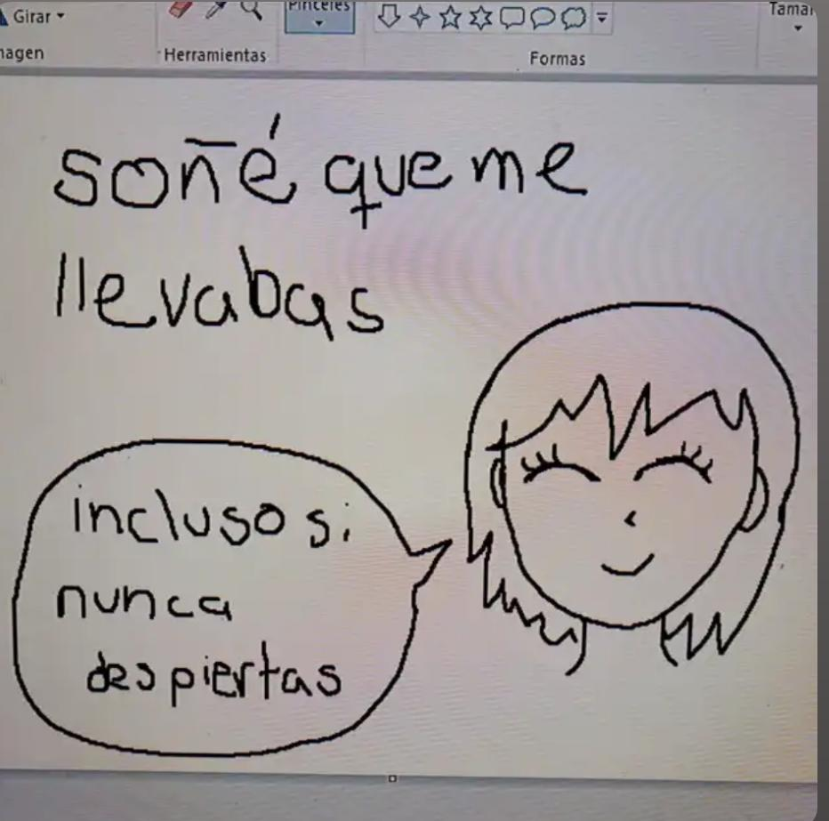

Last words
Me olvidarás (como lo haces ya) - Incluso si no despiertas
Por si no te vuelvo a ver
Todo esto no debí hacerlo
Nadie me obligó, aquellos regalos que te he dado, ya sea una flor, un libro, un pin, ocurren porque veo aquello y pienso que te podrían gustar.
A pesar que no te pueda dar más flores, me gustaría que tuvieras esto, no fue el primer regalo, tampoco será el último. Pero por ahora, es lo más que te puedo dar.
Si algún día te sientes sola, recuerda que siempre habrá alguién a 1255 km esperando, Si te sientes odiada, recuerda que siempre habrá alguien cuyo pensamiento inundara su mente al momento de ver attack on titan, escuchar a Billie Eilish o simplemente algo tan sutil como ver a dos personas jugar guitar hero.
I should have hugged you tighter if I had known it was the last time I would see you.